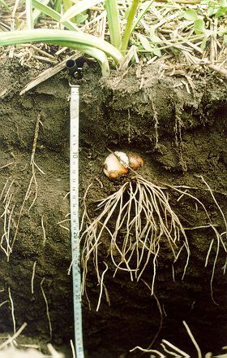
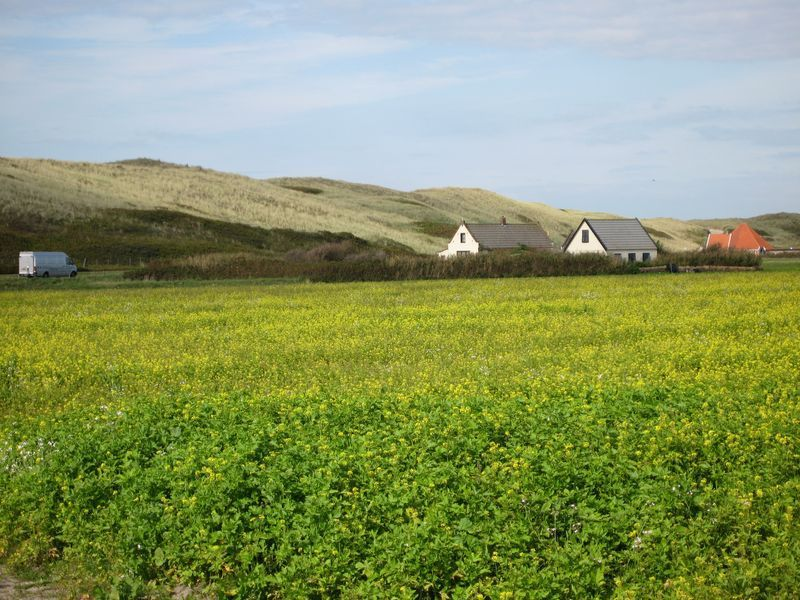
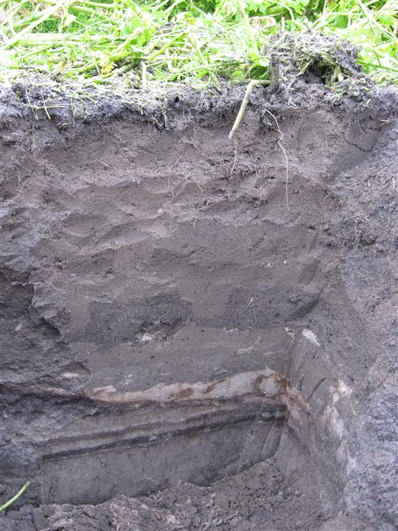
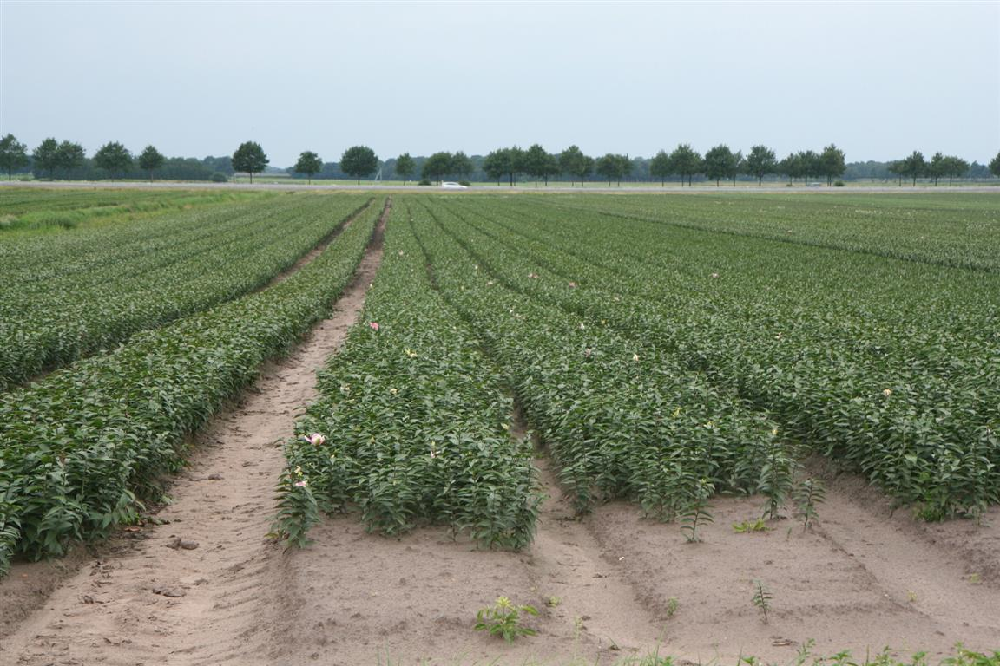
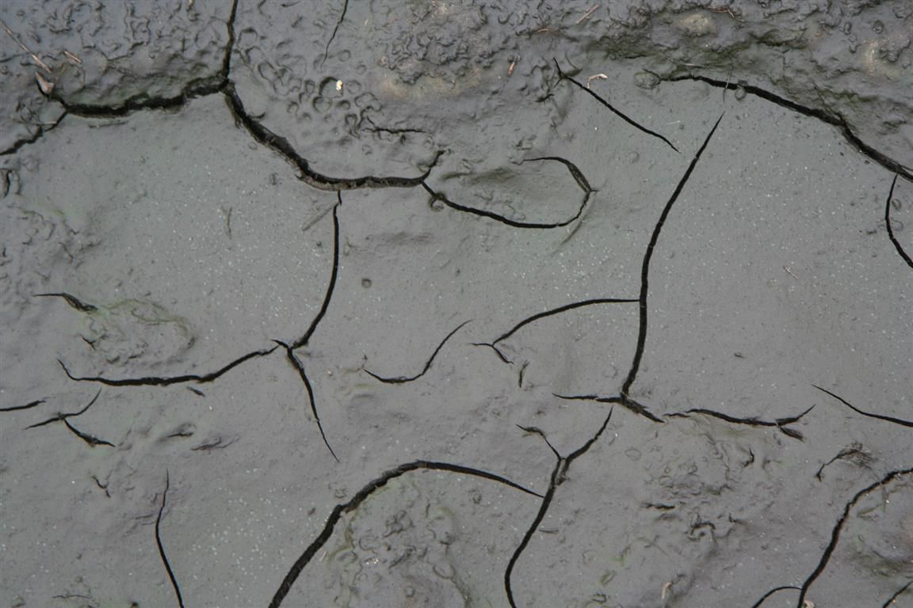
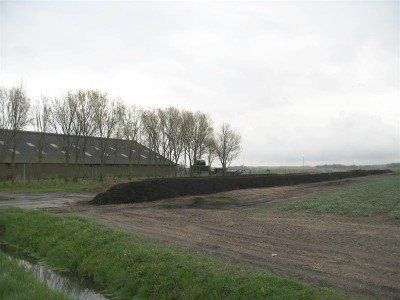

Zand
Verzorging van de bodem is een noodzaak in de bollenteelt op zand. Aanvoer van compost, teelt groenbemesters, bodembewerking en goed beheer van de grondwaterstanden vergen veel aandacht.
Inleiding
De bollenteelt op zand vindt plaats in de volgende gebieden:
Bollenstreek Zuid-Holland en Kennemerland Noord-HollandZandgronden met als belangrijkste gewassen hyacint, tulp en narcis. Door het intensieve bouwplan is een ‘verticale’ vruchtopvolging nodig. Om de ca. 9 jaar wordt de grond geploegd tot 60 cm diepte. De organische stofgehalten zijn meest rond de 1,1% of lager. Stalmest en compost worden aangevoerd. Daarnaast is er de eigen compost van vooral pelafval en stro.
Bollenstreek Zuid-Holland en Kennemerland en noordelijk Zandgebied van Noord-HollandZandgronden met naast tulp, hyacint en narcis een vierde gewas of een reeks van gewassen. De bouwvoor is meest 40 cm dik. De organischestofgehalten zijn meest rond de 1,1% of lager. Stalmest wordt veel bij hyacint gegeven. Het gebruik van GFT-compost neemt toe.
Noordelijk Zandgebied van Noord-HollandNaast tulp, hyacint en narcis wordt veel lelie geteeld. Een deel van de lelies telen deze bedrijven ook op de dekzandgronden van Oost-Nederland. Stalmest wordt ook hier veel bij hyacint gegeven, naast GFT-compost.
Zandgebied van Noord- en Oost-NederlandDe lelieteelt staat hier centraal. Grond wordt hier gehuurd van veehouders. Maïsland of andere akkerbouwgewassen hebben de voorkeur (70%) boven grasland (30%).Reizende bollenkraam vooral in West-FrieslandDeze bedrijven telen hoofdzakelijk tulp op huurland op zavel- en kleigronden. Grasland als voorvrucht heeft vaak de voorkeur, maar ook binnen de akkerbouw wordt veel geteeld. Gemiddeld wordt er 1:7 geteeld. Er is een grote variatie in bedrijfsgrootte. Kunstmest is de belangrijkste meststof. Alleen op slempgevoelige gronden wordt stro gebruikt, ca. 8 ton per ha. Vanuit Noord-Holland wordt er ook in Flevoland geteeld. De verzorging vindt hier vanuit Noord-Holland plaats.
Op de zandgronden wordt het steeds moeilijker het organischestofgehalte op peil te houden vanwege de wettelijke gebruiksnormen van voedingsstoffen. Door beperkingen in de fosfaataanvoer kan ook organische stof uit mest en compost, die ook fosfaat bevatten, minder worden gebruikt.
Eisen aan de bodemDe bodem vergt bij de bollenteelt extra aandacht. Hier zijn meerdere redenen voor:-De meeste bolgewassen hebben geen wortelharen. De wortelharen maken een intensief contact met de bodem mogelijk en deze mogelijkheid ontbreekt dus bij bollen.-Bolgewassen hebben al voedingsstoffen nodig voordat de mineralisatie van organische stof goed op gang is gekomen.-In de natuur groeien bollen ondiep in een enigszins humushoudende grond. Vanwege de kans op vorstschade en ziekten worden bollen vrij diep geplant en ook vaak in zand- en zavel- of kleigronden met lage organische stofgehalten.-Wortelvorming in de herfst is belangrijk. Er wordt evenwel vaak laat geplant waardoor er minder tijd is voor wortelvorming. Een humushoudende grond met een goede structuur die de beworteling stimuleert is dan extra belangrijk. De reden van het late planten is dat er pas geplant wordt als de bodemtemperatuur onder de 12 graden C ligt, dit in verband met de kans op fusarium en Augustaziekte. Dit is rond 1 oktober op zavel en klei. Op zand wordt tulp na 1 november geplant.Om een goede bodemkwaliteit voor een teelt te krijgen zijn bodemwerking, bemesting en teelt in een vruchtopvolging met bodemverzorgende gewassen en groenbemesters van belang.

Een bodem uit de Bollenstreek bij Hillegom. De gronden worden periodiek omgezet tot 60 cm diepte. Hierdoor is een intensieve vruchtopvolging van hyacint, tulp en narcis mogelijk. Door de diepe grondbewerking is het moeilijk om voldoende organische stof te krijgen. Bij deze grond is het organische stofgehalte 1,2%, wat hoger is dan gemiddeld. De bodemstructuur is hier ook goed en de wortels van de hyacint kunnen tot 35 cm diepte wortelen. GFT-compost, stalmest en bollencompost zijn de belangrijkste middelen om het organische stofgehalte op peil te hoden. Door het lage organische stofgehalte spoelen voedingsstoffen, vooral stikstof, makkelijk uit. Ook ammonium dat bij andere gronden aan humus of klei wordt gebonden, spoelt hier makkelijk uit. Toch zijn de nitraatgehalten in het oppervlaktewater laag. De uitgespoelde stikstof wordt in de ondergrond omgezet in stikstof- en lachgas en komt daarom maar beperkt in het oppervlaktewater. Voor de vochtvoorziening is de hoge grondwaterstand van 50 - 60 cm onder maaiveld belangrijk. Verder is het voor een goede doorwortelbaarheid van belang dat het zand niet te fijn is.
Bodemsoorten en bollenteeltBollen worden tussen 8 en 15 cm diepte geplant. De bovenlaag van de grond is het meest vruchtbaar en daar maken bollen maar beperkt gebruik van omdat bij de meeste bollensoorten de wortels niet omhoog kunnen groeien. Ook is het wortelstelsel zwak. Verder is de vochtbehoefte hoog. Aan de bodem stellen bollen bijzondere eisen.Zandgronden kunnen in tegenstelling tot zavel- en kleigronden luchtig zijn bij hoge grondwaterstanden, Daarom vindt de bollenteelt veel plaats op zandgronden. Eis is wel dat de grondwaterstanden goed gereguleerd kunnen worden. Tijdens het groeiseizoen moet de grondwaterstand 50 tot 60 cm beneden maaiveld zijn. Deze hoge grondwaterstand is nodig omdat het organischestofarme zand weinig vocht vasthoudt. In de winter is 60 cm onder maaiveld een gebruikelijke grondwaterstand. Bij veel neerslag nog 10 tot 20 cm dieper. De lucht- en vochtvoorziening stellen verschillende eisen aan de grond. Voor een goede luchtvoorziening moet het zand niet te fijn zijn (optimaal M50 180-210 mu). Verder moet het zand los zijn. De wateraanvoer van beneden is bij wat grover en luchtig zand juist minder dan bij fijner en vaster zand. De marges waarbinnen gewerkt kan worden zijn smal. Verder moet in het gebied het polderpeil nauwkeurig beheerst kunnen worden. De bemalingscapaciteit of de berging moeten voldoende groot zijn.Wanneer een zandgrond kalkrijk is, is de structuur losser. Dit komt enerzijds door de aanwezigheid van een kalkhuidje rond de zandkorrels, anderzijds door de aanwezigheid van schelpresten. De kalk geeft wel een hoge pH-waarde en stimuleert daarmee een bodemleven dat organische stof snel afbreekt. Wanneer de zandgrond klei bevat of de korrelgrootte van het zand te klein is, is de kans op verdichte grond groter en kan sneller luchtgebrek optreden.Wanneer de grondwaterstanden beneden de 50 cm komen in het groeiseizoen neemt de noodzaak tot beregenen snel toe. Er wordt gerekend met een dagelijkse vochtbehoefte van 6 mm. Op kalkrijke gronden is een lage grondwaterstand eerder een probleem dan op kalkloze gronden. Kalkloze gronden zijn dichter en het grondwater kan hoger opstijgen. Verder hebben de kalkloze zandgronden meestal hogere organische stofgehalten waardoor ze het vocht beter kunnen vasthouden. De kans op vorstschade is hoger op kalkrijke zandgronden. Om vorstschade te voorkomen worden op kalkrijke gronden hogere grondwaterstanden aangehouden. Hyacint en narcis groeien op kalkrijke zandgronden beter dan op kalkloze. Voor tulp is dit minder het geval. MaatregelenInhoud:Aanvoer van organische stofGrondverbetering op zee- en duinzandgrondenGrondverbetering op dekzandgrondenSoorten organische mestGroenbemestersBodembedekking en bodemverzorging
Aanvoer van organische stofZee-duinzandgrondenDe afbraak van organische stof op kalkrijke luchtige zee- en duinzandgronden gaat aanzienlijk sneller dan op kalkloze zandgronden of zavel- en kleigronden.Voldoende organische stof aanvoeren op gronden die sterk organische stof afbreken is niet eenvoudig en vergt voortdurend aandacht. Naar schatting wordt op deze gronden jaarlijks 7 tot 10% van de organische stof in de grond afgebroken (ten Berge e.a., 2007). Als streefwaarde voor het organischestofgehalte op zee- en duinzandgronden wordt 1,1% aangehouden. Aangenomen wordt dat, om dit gehalte te handhaven, een jaarlijkse aanvoer van ca. 6000 kg effectieve organische stof per ha nodig is op bedrijven in de Bollenstreek en Kennemerland die periodiek ploegen tot 60 cm diepte en ca. 3500 kg effectieve organische stof per ha op bedrijven met een bouwvoor van 40 cm dikte (Bollenstreek, Kennemerland en de kop van Noord-Holland). Een hoger organische stofgehalte dan 1,1 % is natuurlijk wenselijk, maar moeilijk te bereiken. Een van de mogelijkheden zou zijn om de bouwvoordikte te beperken. Het ploegen tot 40 cm heeft als reden dat de gewasresten voldoende diep in de grond komen om de kans op verspreiding van ziekten te voorkomen. Daarnaast moeten de gewasresten, vooral die van groenbemesters, voldoende diep ondergewerkt worden om problemen bij het planten te voorkomen. De zandristers op de ploeg zorgen ervoor dat de grond goed gekeerd wordt en deze bepalen de ploegdiepte van 40 cm. De minimum diepte die te bereiken is, is ca. 35 cm. Op de bedrijven waar periodiek tot 60 cm diepte wordt geploegd, is het meeste resultaat te behalen op het gebied van een hoger organischestofgehalte bij een lagere aanvoer door het diepe ploegen achterwege te laten, maar de verandering is ingrijpend. Ziekten als Pythium en Rhizoctonia en verder onkruiddruk belemmeren de verlaging van de dikte van de bewerkte laag. Ook zal de 1:3 vruchtwisseling een 1:4 vruchtwisseling moeten worden, waarbij een lager salderend gewas, zoals dahlia, moet worden toegevoegd. Voor de toekomst ligt er de taak mogelijkheden te vinden de ploegdiepte te bepreken. Wanneer er bijvoorbeeld tot 25 cm geploegd wordt, ziet het hele vraagstuk van verzorging van organischestofgehalte, bodemlevenverzorging, ziektewerendheid en levering van voedingsstoffen er geheel anders uit.Bij de keuze van de organischestofbron om het organischestofgehalte op peil te brengen of te houden spelen meerdere factoren een rol. Dit zijn vooral: de prijs, de bijdrage aan bodemstructuur en bodemleven, de bijdrage aan de mineralenvoorziening, de mogelijkheden binnen de wettelijke gebruiksnormen en de maatschappelijke aspecten.

Teelt van Gele Mosterd als groenbemester voorafgaand aan de teelt van tulp bij Callantsoog.

De bodem onder het perceel Gele mosterd. De bodem is sterk verdicht en belemmert de groei van wortels. De bodems op zandgronden in het noorden van Noord-Holland zijn gemiddeld slechter dan die in de duinstreek van Zuid-Holland. Een belangrijke reden is dat de gronden in het noorden korter in cultuur zijn.

PrijsBij de keuze van de organischestofbron is uitsluitend kiezen op grond van de prijs van de effectieve organische stof (eos) niet de juiste. Stalmest legt het dan af tegen GFT- en groencompost. Vooral in de hyacintenteelt is duidelijk geworden dat niet alleen naar de prijs van de stabiele organische stof moet worden gekeken. Bij een vergelijking van GFT-compost en groencompost moet wat betreft bodemverbeterende eigenschappen de voorkeur worden gegeven aan GFT-compost. GFT-compost levert een betere bijdrage aan voeding van het bodemleven. Bij de toepassing van veen of tuinturf speelt de hoge prijs van deze organische stofbronnen een belangrijke rol.Bijdrage aan bodemstructuur en bodemlevenAls streefwaarde voor het organische stofgehalte op de zee- en duinzandgronden wordt een gehalte van 1,1% aangehouden. De ‘Adviesbasis voor de Bemesting van Bloembolgewassen’ noemt 1,0-1,5 %. Bij de beoordeling van dit gehalte is van belang dat het niet alleen gaat om het gehalte, maar ook om de kwaliteit van de organische stof. Een koolstofrijke en stikstofarme organische stof die geen voedsel is voor het bodemleven, draagt veel minder bij aan de bodemkwaliteit. Proeven waarbij GFT en stalmest worden vergeleken, wijzen op een betere werking van de organische stof uit stalmest. Ook ervaringen in de praktijk geven dit aan. Ook van veen en tuinturf is te verwachten dat de organischestofkwaliteit lager is dan die van stalmest en oogstresten. De organischestofkwaliteit van drijfmest is waarschijnlijk wel gunstig, maar door het hoge gehalte aan stikstof kan in deze vorm maar weinig organische stof worden gegeven.
Wettelijke gebruiksnormenDe gebruiksnormen zijn het belangrijkste probleem voor een voldoende organische stofaanvoer. Door deze normen zijn fosfaatrijke composten in het nadeel. 50% van de fosfaat in compost hoeft slechts meegeteld te worden, maar dit percentage lijkt in de bollenteelt toch te laag om een goede organische stofvoorziening te krijgen. Daar waar het organische stofgehalte zeer laag is en omhoog gebracht moet worden, zijn de gebruiksnormen nog sterker belemmerend. Dit probleem zal in de toekomst toenemen. De gebruiksnormen voor fosfaat worden strenger en het is mogelijk dat de Kaderrichtlijn Water (KRW) extra eisen gaat stellen omdat de geplande gebruiksnormen geen garantie zijn voor het halen van de doelen voor fosfaatgehalten in het oppervlaktewater, die in 2027 moeten gelden.
Voorlopige gebruiksnorm fosfaat in kg P2O5 per ha voor bouwland tot 2015:
2014:65 / 2015: 60Maatschappelijke aspectenTenslotte zijn er de maatschappelijk aspecten. Gebruik van veen of tuinturf betekent vaak een aantasting van natuurgebieden. Tevens, in verband met klimaatverandering, een extra koolzuurproductie. Gebruik van compost betekent een tijdelijke vastlegging van koolzuur. Op de kalkrijke gronden is dit voordeel door de hoge afbraaksnelheid beperkt.
Rekenvoorbeeld organischestofaanvoerAls voorbeeld van de problematiek rond de organischestoftoevoer wordt een bedrijf op duinzandgrond genomen met een bouwvoordikte van 40 cm. Er wordt naast bollencompost gemiddeld 13 ton stalmest en 10 ton GFT-compost per ha gegeven. Met de stalmest wordt er 58 kg P2O5 per ha en 975 kg eos (effectieve organische stof) aangevoerd. Met de GFT-compost 44 kg P2O5 per ha en 1850 kg eos. In totaal wordt er binnen de berekeningswijze van de wettelijke gebruiksnormen 80 kg P2O5 per ha gegeven; de maximale gift binnen de gebruiksnormen. Dit omdat slechts 50% van de fosfaat in GFT-compost meetelt voor de gebruiksnormen en omdat de fosfaat in de bollencompost niet meetelt. De fosfaat in de bollencompost is voornamelijk afkomstig van de van buiten het bedrijf aangevoerde stro. In totaal wordt er met stalmest en GFT- en bollencompost 124 kg P2O5 per ha gegeven. Dit voorbeeld maakt duidelijk dat wanneer de gebruiksnormen geleidelijk naar maximaal 60 kg P2O5 per ha gaan, het gebruik van stalmest steeds moeilijker wordt en er meer GFT-compost gebruikt zal gaan worden. Fosfaatgebrek voor de gewassen is voorlopig niet te verwachten. De 124 kg P2O5 per ha is, ook als deze gedeeltelijk in de organische stof blijft, meer dan de afvoer met het gewas en de uitspoeling.
Aanvoer van effectieve organische stof uit verschillende bronnen.Organische stofbron Kg eos per haGewasresten 500Groenbemesters (eens per drie jaar) 250Bollencompost 10 ton 500Stalmest 13 ton 975GFT-compost 10 ton 1850Totaal 407
Grondverbetering op zee- en duinzandgrondenHet geschikt maken van grond voor bollenteelt vindt al heel lang plaats. Afgraven is sinds de 19e eeuw gebruikelijk. Het grondwater op de goede diepte krijgen was het doel. Sinds het eind van de 19e eeuw wordt ook omzanden toegepast. Het te fijne zand uit de bovengrond wordt vervangen door wat grover zand uit de ondergrond. Bezanden, een nieuwe laag zand aanbrengen, vindt plaats sinds het midden van de 20e eeuw. De kosten hiervan zijn aanzienlijk. Het aanbrengen van een laag van 1 m dik ontzilt zee- of wadzand, opnieuw draineren en het verplaatsen van sloten kost ca. € 120.000 per ha (Groenewoud, 2007). Hierbij komen nog de kosten van de verhoging van het organische stofgehalte. Het zand bevat aanvankelijk vaak 0,3 tot 0,4 % organische stof en dit moet naar 0,8 tot 1,3 % worden gebracht. Dit duurt 10 tot 15 jaar. Het kan met stalmest, compost, tuinturf en stro. Deze organische stofleveranciers zijn, zoals eerder vermeld, sterk verschillend met betrekking tot aanvoerkosten en mogelijkheden binnen de gebruiksnormen.Wenselijke grondwaterstanden hangen af van de grofheid van het zand en het gewas. In de bollenstreek van Zuid-Holland is hier onderzoek naar gedaan. Dit onderzoek betrof een vergelijking met constante waterstanden. In de praktijk wisselen de waterstanden, wat mogelijk van belang is.
Optimale grondwaterstanden bollenteelt (bron PPO).Gewas / Optimale grondwaterstand (cm onder maaiveld)Hyacint, grof zand (M50 180-210 mu): 50 cmTulp, grof zand: 40 – 50 cmNarcis, grof zand: 45 cmHyacint, fijn zand: 60 cm
Hyacint stelt hogere eisen aan ontwatering dan andere bolgewassen. Ook bij wateroverlast is hyacint gevoelig. Deze is gevoeliger dan tulp en tulp is weer gevoeliger dan narcis. In de winter, wanneer de bodem koud is, kunnen bollen korte tijd onder water staan. Door de lage temperatuur is de kans op aantasting dan wat minder. In de periode direct na planten is afwezigheid van wateroverlast het belangrijkst.Om een grondwaterstand van 50-55 cm te krijgen moet het slootpeil 60-70 cm onder maaiveld ligge
Grondverbetering op dekzandgrondenDekzand, waaronder ook de veenkoloniale gronden behoren, wordt veel als huurland gebruikt. De basis van de bodemverzorging ligt dan bij de verhuurder. De volgende thema’s hebben hierbij aandacht nodig:1. Ontwatering. Zorg voor een goede ontwatering. In de winter staat het grondwater niet binnen 80 cm en in de zomer op ca. 120 cm. De afstand tussen de diepste wortels en het grondwater is indien mogelijk niet meer dan 80 cm. Plassen zijn binnen een dag verdwenen. Draineren of woelen zijn oplossingen. Betaal eventueel mee aan drainagekosten.2. Bekalken. Het is niet goed mogelijk om op korte termijn de zuurgraad te verbeteren door een zware bekalking. Dit moet, indien nodig, al een of meerdere jaren eerder gebeuren.3. Berijden met steeds zwaardere machines onder natte omstandigheden is funest voor de bodemstructuur. Van belang is het niet rijden onder te natte omstandigheden, voor een lage bandenspanning zorgen (0,8 bar in het voorjaar en 1,0 bar in de zomer), onder natte omstandigheden met sleepslangen bemesten; geen koeien op te nat land, maïsrassen kiezen die vroeg geoogst worden.4. Wissel snijmaïs af met granen of grassen.
Organische stof op de dekzandgronden van Noord-, Oost- en Zuid-NederlandDe organischestofgehalten op de dekzandgronden zijn over het algemeen hoger dan die op de kalkrijke zee- en duinzandgronden. Dit komt omdat op deze kalkloze gronden de afbraak minder snel gaat, maar ook omdat deze gronden vaak een zeer stabiele, vaak vele duizenden jaren oude organische stof bevatten die maar beperkt aan de bodemkwaliteit bijdraagt. Op een lelieperceel bij Beilen in Drenthe is dat goed te zien. Tussen de bedden ligt puur zand aan de oppervlakte. Verderop in een lager gedeelte ligt de organische stof. De regen kan organische stof en zand heel makkelijk scheiden, omdat er geen stabiele verbinding tussen beide is. De organische stof draagt dus weinig bij aan de bodemstructuur. De zeer oude organische stof is ook geen voeding voor het bodemleven, anders was deze organische stof niet zo oud geworden.

Lelieteelt bij Beilen. In het midden van het perceel is een donkere humusrijke strook tussen de bedden zichtbaar.

De bodem in het donkere gebied. Zwarte koolstofrijke humus met weinig samenhang met de zanddeeltjes is tijdens regen naar een laag gelegen lek gestroomd
Soorten organische mestOrganische mest en compost leveren, in tegenstelling tot minerale mest, organische stof die een bijdrage aan het organischestofgehalte levert en het bodemleven stimuleert. Bij compost mag een stikstofwerkingscoëfficiënt van 10% en een fosfaatwerkingscoëfficiënt van 50% worden aangehouden. Bij bijvoorbeeld stalmest zijn deze werkingscoëfficiënten respectievelijk 40% en 100%. Bij een krappe gebruiksruimte bestaat hierdoor de neiging om meer compost en minder vaste mest te gebruiken. Bij compost wordt vooral gewerkt aan het organischestofgehalte en bij vaste mest aan organischestofgehalte, voedingsstoffenvoorziening en bodemleven. Het bodemleven is een belangrijke factor bij onderhoud van de bodemstructuur en levering van voedingsstoffen. Bij de compostsoorten levert GFT-compost een belangrijker bijdrage aan het bodemleven dan groencompost.

Compostbereiding in de duinstreek van Zuid-Holland
GroenbemestersGroenbemesters worden onder meer geteeld om uitspoeling van voedingsstoffen tegen te gaan, om organische stof te leveren en om verstuiving tegen te gaan. De belangrijkste eigenschap is evenwel verbetering van de bodemstructuur. De vers ondergeploegde groene massa verbetert de bodemstructuur maar beperkt en kan onder natte omstandigheden ook een negatief effect op de bodemstructuur hebben doordat er luchtgebrek ontstaat. Het zijn vooral de wortels die de bodemdeeltjes bijeen houden en de structuur verbeteren.Verder is bij de teelt van groenbemesters van belang dat de gebruiksruimte van stikstof groter wordt, dat het inzaaien en onderwerken kosten met zich meebrengt en dat aaltjes zich kunnen vermeerderen tijdens de teelt.Op zandgronden komen in aanmerking granen als rogge, grassen als Italiaans of Engels raaigras, bladrammenas en Tagetes. De bodemstructuur wordt vooral door een intensieve beworteling verbeterd. Het zijn de granen en grassen die de meest intensieve beworteling hebben. Wanneer de groenbemester voor 1 september wordt gezaaid en na 1 december wordt ondergewerkt, kan voor een niet-vlinderbloemige de stikstofgebruiksruimte met 60 kg N per ha worden verhoogd. Een nadeel van groenbemesters kan zijn dat de aaltjesontwikkeling gestimuleerd wordt. In de biologische landbouw blijkt dat een goede bodemkwaliteit sterk aaltjesonderdrukkend werkt. Groenbemesters dragen bij aan bodemkwaliteit. De voor- en nadelen moeten steeds afgewogen worden. Per groenbemester is de overdracht van aaltjes weer anders.
Waardplanten voor aaltjes bij groenbemesters - =slecht + = gunstig (bron PPO en PZ).Vooral van belang bij Rogge Italiaans raaigras Engels raaigras Bladrammenas Gele mosterd Tagetes
In volgorde van Rogge tot Tagetes:Wortellesieaaltje Narcis, lelie – – - – – ++Trichodorus Gladiool – – – + 0 –Tabaksratelvirus Hyacint, Gladiool, narcis, tulp - - - ++ – –Stengelaaltje Hyacint, muscari, narcis, tulp - 0 0 ? ? 0M. chitwoodi Dahlia en gladiool - - 0 0 - +M. fallax Gladiool - – – 0 - +
Zaaizaadhoeveelheid in kg per ha.Rogge Italiaans raaigras Engels raaigras Bladrammenas Gele mosterd TagetesIn volgorde: 120-180 25-35 20-25 20-25 15-25 60-80Bij het onderwerken van een groenbemester is het belangrijk dat deze goed door de bouwvoor wordt gemengd. Bovengrondse delen moeten eerst verkleind worden. Vervolgens frezen en tenslotte ploegen. Voorkom te diep onderwerken en bevorder een goede menging door de bouwvoor. Gebruik hiervoor een stro-inlegger in plaats van een voorschaar op de ploeg. De teelt van een groenbemester kost ongeveer € 200,- per ha.
Bodembedekking en bodemverzorgingVoor onkruidonderdrukking en om stuiven tegen te gaan wordt vooral op zandgrond vaak een strodek toegepast. Tarwestro is de gebruikelijke strosoort. Aan het gebruik van tarwestro kleven evenwel nadelen. De prijs is hoog en er kan opslag van tarwe zijn. Deze opslag kan vocht- en voedingsstoffenconcurrentie met zich meebrengen. Ook stimuleren van ziekten speelt een rol. Het stro wordt mede ook aangebracht omdat aaltjes en virussen zich kunnen vermeerderen. Het tegengaan van Olpidium brassicae speelt ook een rol. Deze schimmel verspreidt het Augustaziekte-virus. Er wordt gezocht naar alternatieven voor het dure tarwestro. Alternatieve afdekmiddelen blijken vaak te duur. Een van de mogelijkheden is om zomergerst in te zaaien en dat voor de winter dood te spuiten. Ook roggestro wordt wel gebruikt, maar hierbij spelen kosten en toegenomen kans op vorstschade een rol. Binnen het project Bollen en Bodem is onderzoek gedaan naar compost als bodembedekker. Het bleek dat compost een opmerkelijke verbetering van de bodemstructuur te zien gaf. Een dikkere laag geeft minder onkruiddruk en een wat rijkere compost geeft een sterkere verbetering van de bodemstructuur. Ook de opbrengst gaat omhoog. Omdat er een vrij grote hoeveelheid compost moet worden aangebracht is de methode alleen bruikbaar op een bedrijf met voldoende gebruiksruimte van stikstof en fosfaat.
LiteratuurBerge, H.F.M. ten, 2007. Mestbeleid en bodemvruchtbaarheid in de Duin- en Bollenstreek. Werkdocument 47 WONM WUR Wageningen.Bodemkaart van Nederland 1965, 1987, 1992, 1996: 9W, 14WO, 15W, 19WO, 20W, 24W, 25W, 25O. Stiboka, Wageningen.Groenewoud C., 2007. Compensatie bollengrond. Aanvullend onderzoek. Arcadis Hoofddorp 2007.Kater, L.J.M. e.a., 2004. Kosteneffectieve maatregelen-pakketten bij mineralenbeleid verdergaand dan Minas. PPO Bloembollen rapport nr 714.Knaap, W.C.A. van der, 1984. Bodemgeschiktheid voor de bloembollenteelt. Bedrijfsontwikkeling 15, 12.Schreuder, R. e.a., 2000. Consequenties Minas en mestbeleid voor de bollenteelt op sectorniveau. Laboratorium voor Bloembollenonderzoek, Lisse, Rapport 123.